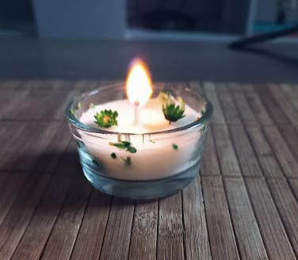

Somos una empresa familiar fundada en 2020. Nos dedicamos a la creación de velas de soja ya que representan una alternativa amigable con el planeta y los animales. Trabajamos en la venta de velas y también en la creación de talleres para que nuestros clientes puedan crear sus propios productos en la comodidad de su hogar. Es importante para nosotros trabajar con productos que sean veganos, reciclados y biodegradables porque estamos comprometidos con el medio ambiente. Las velas se soja surgen como una alternativa saludable a las velas de parafina, ya que las mismas no liberan toxinas, cuentan con un punto de fusión bajo y además de usarla para decorar ambientes también pueden ser usadas para masajes.
"El mundo está lleno de cosas y hace falta alguien que las encuentre" Pippi Calzaslargas
Nuestra razón de ser es la de ayudar a nuestro público a lograr un consumo más responsable y que conozcan que productos pueden ser amigables con el medio y los animales. Mostrar todos los beneficios que tiene el consumo de velas de soja en aromaterapia, masajes, meditación, etc. No solo nuestras velas se realizan con productos renovables y reciclables, sino que contamos con un método de empaquetado de productos que son ecológicos.
Ser referentes a nivel nacional y ayudar con talleres a nuestro público para lograr un consumo responsable a la hora de elegir productos.
Pasión: Sin la pasión de la creación no existiría nuestra empresa. Honestidad: Como uno de los mayores valores, tanto con nuestros empleados como con nuestros clientes. Puntualidad en las entregas: Todas nuestras entregas se realizan de forma puntual y con su correspondiente packing personalizado. Adaptabilidad: estamos comprometidos con el aprendizaje y formación contante para adaptarnos a los nuevos escenarios que se nos han planteado en los últimos años.